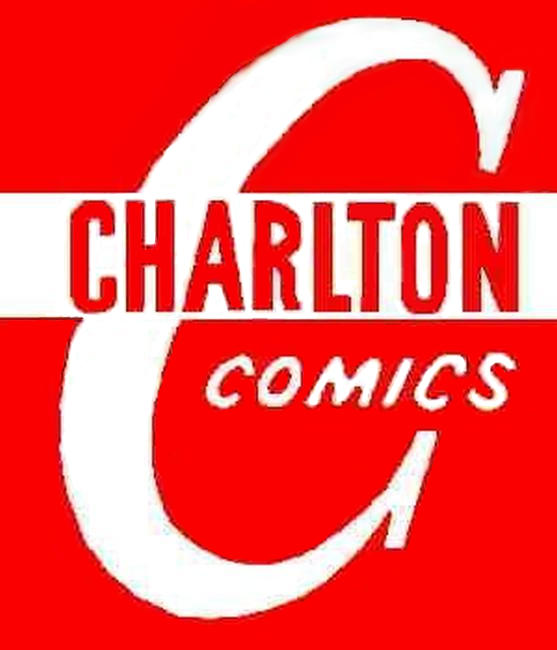

Charlton Comics was an American comic book publishing company that existed from 1945 to 1986, having begun under a different name (T.W.O. Charles Company) in 1940. It was based in Derby, Connecticut. The comic-book line was a division of Charlton Publications, which published magazines (most notably song-lyric magazines), puzzle books and, briefly, books (under the Monarch and Gold Star imprints). It had its own distribution company (Capital Distribution).
Charlton Comics published a wide variety of genres, including crime, science fiction, Western, horror, war and romance comics, as well as funny animal and superhero titles. The company was known for its low-budget practices, often using unpublished material acquired from defunct companies and paying comics creators among the lowest rates in the industry. Charlton Comics were also the last of the American comics to raise their price from ten cents to 12 cents in 1962.
It was unique among comic book companies in that it controlled all areas of publishing - from editorial to printing to distribution - rather than working with outside printers and distributors as did most other publishers. It did so under one roof at its Derby headquarters.
The company was formed by John Santangelo, Sr. and Ed Levy in 1940 as T.W.O. Charles Company, named after the co-founders' two sons, both named Charles, and became Charlton Publications in 1945.
Abbott and Costello #1 - 22 Feb. 1968 - Aug. 1971 Based on the TV series
Army Attack series 1 #1 - 4 July 1964 - Feb. 1965
Army War Heroes #1 - 38 Dec. 1963 - June 1970 Also see The Iron Corporal
Atom the Cat #9 - 17 Oct. 1957 - Aug. 1959 formerly Tom Cat
Atomic Bunny #12 - 19 Aug. 1958 - Dec. 1959 formerly Atomic Rabbit
Atomic Mouse #1 - 54 March 1953 - June 1963
Atomic Rabbit #1 - 11 Aug. 1955 - March 1958 Atomic Bunny from #12 onward
Attack! series 2 #54 - 60 ? 1958 - Nov. 1959 war comic
Attack at Sea #5 Oct. 1968 formerly Attack! vol. 4
Barney and Betty Rubble #1 - 23 Jan. 1973 - Dec. 1976 Based on The Flintstones
Barney Google and Snuffy Smith #1 - 6 March 1970 - Jan. 1971 Based on the comic strip
Battlefield Action #16 - 62 Nov. 1957 - ? 1966 formerly Foreign Intrigues
Beyond the Grave 17 issues from 1975 - 1984
Billy the Kid #9 - 153 Nov. 1957 - March 1983 formerly The Masked Raider
The Bionic Woman #1 - 5 Oct. 1977 - June 1978 Based on the TV series
Black Fury #1 - 57 May 1955 - ? 1966 becomes Wild West
Blondie Comics #177 - 222 Feb. 1969 - Nov. 1976 continued from King Comics series
Blue Beetle series 2 #18 - 21 Feb. 1955 - Aug. 1955
Bo #1 - 3 June 1955 - Oct. 1955
Brenda Starr #13 - 15 June 1955 - Oct. 1955
Brides in Love #1 - 45 Aug. 1956 - Feb. 1965 becomes Summer Love
Bullwinkle & Rocky #1 - 7 July 1970 - July 1971 Based on the TV series
Captain Atom 1965 - 1967
Captain Gallant of the Foreign Legion #1 - 4 ? 1955 - Jan. 1956
Captain Willy Schultz #76, 77 Oct. 1985 - Jan. 1986 Low print run
Career Girl Romances #24 - 78 June 1964 - Dec. 1973 formerly Three Nurses
Charlie Chan #6 - 9 June 1955 - March 1956
Charlton Action: featuring Static #11 - 12 Oct. 1985 - Dec. 1985 Low print run
Charlton Bullseye #1 - 10 June 1981 - Dec. 1982
Charlton Classics #1 - 9 April 1980 - Aug. 1981
Charlton Premiere series 1 #19 July 1967 formerly Marine War Heroes
Cheyenne Kid #8 - 99 July 1957 - Nov. 1973 formerly Wild Frontier
Cody Of The Pony Express #8 - 10 Oct. 1955 - June 1956 becomes Outlaws Of The West
Confidential Diary #12 - 17 May 1962 - March 1963
Cowboy Love #28 - 31 Feb. 1955 - Aug. 1955
Cowboy Western Comics #17 - 67 July 1948 - March 1958
Creepy Things #1 - 6 July 1975 - June 1976
Danger and Adventure #22 - 27 Feb. 1955 - Feb. 1956
Danny Blaze #1, 2 Aug. 1955 - Oct. 1955 becomes Nature Boy
David Cassidy #1 - 14 Feb. 1972 - Sept. 1973 Star of The Partridge Family
Davy Crockett #1 - 8 Aug. 1955 - Jan. 1957 becomes Kid Montana
D-Day #1 - 6 Summer 1963 - Nov. 1968 Also see Special War Series
Death Valley #7 - 9 June 1955 - Oct. 1955 becomes Frontier Scout Daniel Boone
Dino #1 - 20 Aug. 1973 - Jan. 1977 Based on The Flintstones
Dr. Graves #73 - 75 Sept. 1985 - Jan. 1986 formerly The Many Ghosts of Doctor Graves
Don Winslow of the Navy #70 - 73 March 1955 - Sept. 1955
Doomsday + 1 #1 - 12 July 1975 - May 1979 #7-12
Drag 'N' Wheels #30 - 59 Sept. 1968 - May 1973 formerly Top Eliminator
Dragstrip Hotrodders #1 - 16 Summer 1963 - Aug. 1967 becomes World of Wheels
Dudley Do-Right #1 - 7 Aug. 1970 - Aug. 1971 Based on the TV series
Dynamite #1 - 9 May 1953 - Sept. 1954 becomes Johnny Dynamite
E-Man #1 - 10 Oct. 1973 - Sept. 1975
Emergency! (comic book) #1 - 4 June 1976 - Nov. 1976 Based on the TV series
Fightin' Air Force #3 - 53 Feb. 1956 - Feb.-March 1966 becomes War and Attack
Fightin' Army #16 - 172 Jan. 1956 - Nov. 1984 formerly Soldier & Marine Comics
The Fightin' Five #28 - 49 July 1964 - Dec. 1982
Fightin' Marines #14 - 176 May 1955 - Sept. 1984
Fightin' Navy #74 - 133 Jan. 1956 - Oct. 1984 formerly Don Winslow of the Navy
Flash Gordon #12 - 18 Feb. 1969 - Jan. 1970 continued from King Comics series
The Flintstones #1 - 50 Nov. 1970 - Feb. 1977 Based on the TV series
Foreign Intrigues #14, 15 ? 1956 - Aug. 1956
For Lovers Only #60 - 87 Aug. 1971 - Nov. 1976 formerly Hollywood Romances
Freddy #12 - 47 June 1958 - Feb. 1965 formerly My Little Margie's Boy Friends
Frontier Scout Daniel Boone #10 - 13 Jan. 1956 - Aug. 1956
Funny Animals #84 - 91 April 1954 - Feb. 1956 continued from Fawcett Comics series
series 2 #1, 2 Sept. 1984 - Nov. 1984 Low print run
Ghost Manor #1 - 19 July 1968 - July 1971 becomes Ghostly Haunts
Ghostly Haunts #20 - 58 Sept. 1971 - April 1978 formerly Ghost Manor
Ghostly Tales #55 - 169 April-May 1966 - Oct. 1984 formerly Blue Beetle vol. 4
Go-Go #1 - 9 June 1966 - Oct. 1967
Gorgo #1 - 23 May 1961 - Sept. 1965 Based on the movie
Gorgo's Revenge #1 ? 1962 becomes The Return of Gorgo
Grand Prix #16 - 31 Sept. 1967 - May 1970 formerly Hot Rod Racers
The Great Gazoo #1 - 20 Aug. 1973 - Jan. 1977 Based on The Flintstones
The Green Planet one-shot 1962
The Gunfighters #51 - 85 Oct. 1966 - July 1984 formerly Kid Montana
Gunmaster series 1 #1 - 4 Sept. 1964 - March-April 1965 western hero
series 5 #84 - 89 July 1965 - Oct. 1967 formerly Six-Gun Heroes, becomes Judomaster
Hanna-Barbera Parade #1 - 10 Sept. 1971 - Dec. 1972
Haunted #1 - 75 Sept. 1971 - Sept. 1984
Haunted Love #1 - 11 April 1973 - Sept. 1975
Hee Haw #1 - 7 July 1970 - Aug. 1971 Based on the TV series
Hi and Lois #1 - 11 Nov. 1969 - July 1971 Based on the comic strip
Hoppity Hooper #1 - 6 May 1972 - June 1973 Based on the TV series
High School Confidential Diary #1 - 11 June 1960 - March 1962
Hillbilly Comics #1 - 4 Aug. 1955 - July 1956
Hollywood Romances #46 - 59 Nov. 1966 - June 1971 becomes For Lovers Only
Hot Rod Racers #1 - 15 Dec. 1964 - July 1967 becomes Grand Prix
Hot Rods and Racing Cars #1 - 120 Nov. 1951 - June 1973
The House of Yang #1 - 6 July 1975 - June 1976 Also see Yang
Huckleberry Hound #1 - 8 Nov. 1970 - Jan. 1972 Based on the TV series
I Love You #7 - 130 Sept. 1955 - May 1980 formerly In Love
In Love #5, 6 ? - July 1955
Intimate #1 - 3 Dec. 1957 - May 1958 becomes Teen-age Love
The Iron Corporal #23 - 25 Oct. 1985 - Feb. 1986 Low print run
Jack in the Box #11 - 16 Oct. 1946 - Nov.-Dec. 1947
The Jetsons #1 - 20 Nov. 1970 - Dec. 1973 Based on the TV series
Johnny Dynamite #10 - 12 June 1955 - Oct. 1955
Judomaster #89 - 98 May–June 1966 - Dec. 1967 formerly Gunmaster (with two #89's)
Jungle Jim #22 - 28 Feb. 1969 - Feb. 1970 continued from Dell Comics series
Jungle Tales of Tarzan #1 - 4 Dec. 1964 - July 1965 series unauthorized by Burroughs.
Just Married #1 - 114 Jan. 1958 - Dec. 1976
Kid Montana #9 - 50 Nov. 1957 - March 1965
Konga #1 - 23 ? 1960 - Nov. 1965 Based on the movie
Konga's Revenge #2, 3 Summer 1963 - Fall 1964 formerly The Return of Konga
Korg: 70,000 B.C. #1 - 9 May 1975 - Nov. 1976 based on the TV series
Lash Larue Western #47 - 84 March-April 1954 - June 1961
Lawbreakers Suspense Stories #10 - 15 Jan. 1953 - Nov. 1953
Li'l Genius #5 - 55 ? 1954 - Jan. 1986 continued from Toby Press' Super Brat
Li'l Rascal Twins #6 - 18 ? 1957 - Jan. 1960 formerly Nature Boy
Li'l Tomboy #92 - 107 Oct. 1956 - Feb. 1960 formerly Funny Animals
Love and Romance #1 - 24 Sept. 1971 - Sept. 1975
Love Diary #1 - 102 July 1958 - Dec. 1976
Many Ghosts of Doctor Graves #1 - 72 May 1967 - May 1982
Marines Attack #1 - 9 Aug. 1964 - Feb.-March 1966
Marine War Heroes #1 - 18 Jan. 1964 - March 1967 becomes Charlton Premiere
Marvels of Science #1 - 4 March 1946 - June 1946 First comic to use name Charlton Comics.
The Masked Raider #1 - 8 June 1955 - July 1957
series 2 #14 - 30 Aug. 1958 - June 1961
Midnight Tales #1 - 18 1972 - 1976
Mr. Muscles #22, 23 March 1956 - Aug. 1956
Monster Hunters #1 - 18 1975 - 1979
My Little Margie #1 - 54 July 1954 - Nov. 1964 Based on the TV series
My Little Margie's Boy Friends #1 - 11 Aug. 1955 - ? 1958
My Little Margie's Fashions #1 - 5 Feb. 1959 - Nov. 1959
My Only Love #1 - 9 July 1975 - Nov. 1976
My Secret Life #19 - 47 Aug. 1957 - Sept. 1962
Mysteries of Unexplored Worlds #1 - 48 1956 - 1965
Mysterious Suspense #1 Oct. 1968
Nature Boy #3 - 5 March 1956 - Feb. 1957
Navy War Heroes #1 - 7 Jan. 1965 - March-April 1965
Outer Space May 1958 - Dec. 1959
Outlaws Of The West #11 - 88 July 1957 - April 1980
Out Of This World #1 - 16 Aug. 1956 - Dec. 1959
The Partridge Family #1 - 21 March 1971 - Dec. 1973
Peacemaker #1 - 5 March 1967 - Nov. 1967
Pebbles & Bamm Bamm #1 - 36 Jan. 1972 - Dec. 1976
Peter Cannon, Thunderbolt #51 - 60 March-April 1966 - Nov. 1967
The Phantom #30 - 74 Feb. 1969 - Jan. 1977
Pictorial Love Stories #22 - 26 Oct. 1949 - July 1950
Popeye the Sailor #94 - 138 Feb. 1969 - Jan. 1977
Primus #1 - 7 Feb. 1972 - Oct. 1972 Based on the TV series
Pudgy Pig #1, 2 Sept. 1958 - Nov. 1958
Punchy and the Black Crow #10 - 12 Oct. 1985 - Feb. 1986
Range Busters #8 - 10 May 1955 - Sept. 1955
Reptilicus #1, 2 Aug. 1961 - Oct. 1961
Reptisaurus the Terrible #3 - #8 Jan. 1962 - Dec. 1962
The Return of Gorgo #2, 3 Aug. 1963 - Fall 1964
The Return of Konga #1 ? 1962
Robin Hood And His Merry Men #28 - 38 April 1956 - Aug. 1958
Romantic Secrets #5 - 52 Oct. 1955 - Nov. 1964
Romantic Story #23 - 130 May 1954 - Nov. 1973
Ronald McDonald #1 - 4 Sept. 1970 - March 1971
Rookie Cop #27 - 33 Nov. 1955 - Aug. 1957
Sarge Snorkel #1 - 17 Oct. 1973 - Dec. 1976
Sarge Steel #1 - 8 Dec. 1964 - March-April 1966
Scary Tales #1 - 46 Aug. 1975 - Oct. 1984
Scooby Doo #1 - 11 April 1975 - Dec. 1976 Based on the TV series
Secret Agent #9 - 10 Oct. 1966 - Oct. 1967
Secret Romance #1 - 48 Oct. 1968 - Feb. 1980
Secrets Of Love And Marriage #1 - 25 Aug. 1956 - June 1961
Six Gun Heroes #24 - 83 Jan. 1954 - March-April 1965
The Six Million Dollar Man (comic book) #1 - 9 June 1976 - June 1978
Soldier & Marine Comics #9, 11 - 15 Dec. 1954 - Aug. 1955
Son of Vulcan #49, 50 Nov. 1965 - Jan. 1966
Space Adventures #1 - 21 1952 - 1956
Space: 1999 (comic book) #1 - 7 Nov. 1975 - Nov. 1976 Based on the TV series
Space War #1 - 34 Oct. 1959 - March 1979
Space Western Comics #40 - 45 Oct. 1952 - Aug. 1953
Special War Series #1 - 4 Aug. 1965 - Nov. 1965
Speed Demons #5 - 10 Feb. 1957 - ? 1958
Strange Suspense Stories #16 - 77 Jan. 1954 - Oct. 1965
Submarine Attack #11 - 54 May 1958 - Feb.-March 1966
Sue & Sally Smith #48 - 54 Nov. 1962 - Nov. 1963
Summer Love #46 - 48 Oct. 1965 - Nov. 1968
Super Brat #1 - 4 Jan. 1954 - July 1954
Surf 'N' Wheels #1 - 6 Nov. 1969 - Sept. 1970
Sweetheart Diary #32 - 65 Oct. 1955 - Aug. 1962
Sweethearts #122 - 137 March 1954 - Dec. 1973
Tales of the Mysterious Traveler #1 - 13 Aug. 1956 - June 1959
Teen Confessions #1 - 97 Aug. 1959 - Nov. 1976
Teen-age Confidential Confessions #1 - 22 July 1960 - ? 1964
Teen-age Hotrodders #1 -24 July 1958 - Dec. 1973
Teen-age Love #4 - 96 July 1958 - Dec. 1973
Texas Rangers in Action #5 - 79 July 1956 - Aug. 1970
The Thing! #1 -17 Feb. 1952 - Nov. 1954
This Is Suspense #23 - 26 Feb. 1955 - Aug. 1955
Tennessee Tuxedo #1 - 9 June 1969 - Dec. 1971 Based on the TV series
This Magazine Is Haunted #1 - 21 Oct. 1951 - Nov. 1954
series 2 #12 - 16 July 1957 - May 1958
Three Nurses #18 - 23 May 1963 - March 1964
Tiger #1 - 6 March 1970 - Jan. 1971
Tim McCoy #16 - 21 Oct. 1948 - Aug. 1949
Time For Love #53 Oct. 1966
Timmy the Timid Ghost #3 - 45 Feb. 1956 - Sept. 1966
Tom Cat #4 - 8 April 1956 - July 1957
Top Cat #1 - 20 Nov. 1970 - Nov. 1973 Based on the TV series
Top Eliminator #25 - 29 Sept. 1967 - July 1968
Underdog #1 - 10 July 1970 - Jan. 1972 Based on the TV series
Unusual Tales #1 - 49 Nov. 1955 - March-April 1965
U.S. Air Force Comics #1 - 37 Oct. 1958 - March-April 1965
U.S. Marines #1 Fall 1964
Valley of the Dinosaurs #1 - 11 April 1975 - Dec. 1976
Vengeance Squad #1 - 6 July 1975 - May 1976
War #1 - 47 July 1975 - ? 1984
War and Attack #1 Fall 1964
War At Sea #22 - 42 Nov. 1957 - June 1961
War Heroes #1 - 27 Feb. 1963 - Nov. 1967
Wheelie and the Chopper Bunch #1 - 7 July 1975 - July 1976 Based on the TV series
Wild Bill Hickock #68 - 75 Aug. 1958 - Dec. 1959
Wild Frontier #1 - 7 Oct. 1955 - April 1957
Wild West #58 Nov. 1966
World of Wheels #17 - 32 Oct. 1967 - June 1970
Wyatt Earp, Frontier Marshal #11 - 72 Jan. 1956 - Dec. 1967
Yang #1 - 17 Nov. 1973 - Jan. 1986 issues #15-17 all reprints
Yellowjacket Comics #1 - 10 Sept. 1944 - June 1946
Yogi Bear #1 - 35 Nov. 1970 - Jan. 1976 Based on the TV series
The Young Doctors #1 - 6 Jan. 1963 - Nov. 1963
Young Lovers #16 - 18 July 1956 - May 1957
Zaza the Mystic #10, 11 April 1956 - Sept. 1956
Zoo Funnies #1 - 15 Nov. 1945 - ? 1947
{kind=link}